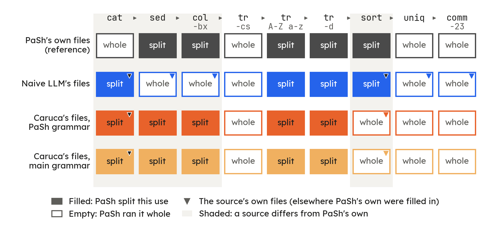
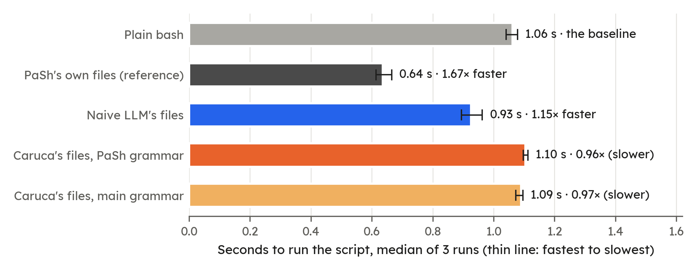
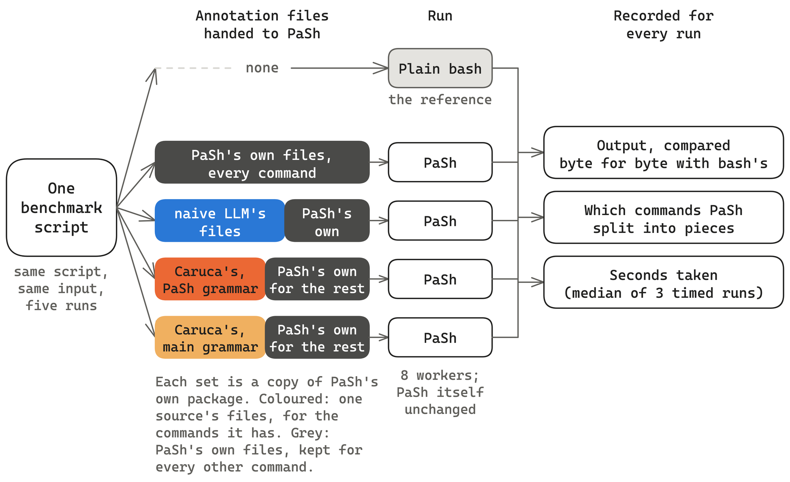

Interim draft 0.9, 24 November 2026. One script measured and independently checked; the rest of the suite is running.
What we ran. One script from PaSh's benchmark suite, spell, which finds misspelled words in a text. It is a single pipeline of nine command uses (seven different commands; tr appears three times), shown on the right, run on a 30 MB input.
How. Under plain bash, then under PaSh four times, each time with a different source of annotation files, the files that tell PaSh which commands it may split into parallel copies. We generated nothing new; the files already existed.
What we saw. The output was right in every run. The sources differ in which of the nine commands PaSh split: 5 with its own files, 4 with the naive LLM's, 5 with Caruca's, but not the same 5. The split that matters for speed is sort; PaSh's own files and the naive LLM's allow it, Caruca's do not. So the script ran 1.7× faster than bash with PaSh's own files, 1.2× faster with the naive LLM's, and about as fast as bash with Caruca's.
What remains. The other 85 scripts are running now, about 10 hours (A5 in the addendum lists every one with its folder). Their numbers replace these.
# Count misspelled words in a text dict=$SUITE_DIR/inputs/dict.txt cat $1 | sed 's/[^[:print:]]//g' | col -bx | tr -cs A-Za-z '\n' | tr A-Z a-z | tr -d '[:punct:]' | sort | uniq | comm -23 - $dict
Table 1. What PaSh did with each source's files on spell. PaSh's own files are the reference column; the two Caruca columns agreed on this script.
| PaSh's own filesthe files that ship with PaSh, hand-written | Naive LLM's fileswritten by a coding agent from the goal, the format and four examples | Caruca's files, PaSh grammarfrom the small grammar Caruca keeps for PaSh | Caruca's files, main grammarfrom Caruca's full grammar of the command | |
|---|---|---|---|---|
| Output same as bash | yes3 of 3 | yes3 of 3 | yes3 of 3 | yes3 of 3 |
| Command uses PaSh split | 5 of 9sed, col, tr, tr, sort | 4 of 9cat, tr, tr, sort | 5 of 9cat, sed, col, tr, tr | 5 of 9cat, sed, col, tr, tr |
| Time, median of 3 | 0.64 s1.67× faster than bash | 0.93 s1.15× faster than bash | 1.10 s0.96×, slightly slower | 1.09 s0.97×, slightly slower |
Plain bash: 1.06 s. Two identical copies of PaSh's own files differed by 0.2% between runs; larger differences are real.
Of the seven commands in the script, three came out the same with every source (tr, uniq, comm). Table 2 shows the four that did not, and Figure 1 shows the whole pipeline. A run swaps in all of a source's files at once, so a difference points to the source, not to one command on its own.
Table 2. Every command where a source changed what PaSh did. "Split": PaSh ran several copies at once on pieces of the input. "Whole": one copy. Tinted cells differ from PaSh's own files.
| Command | PaSh's own | Naive LLM | Caruca, PaSh grammar | Caruca, main grammar |
|---|---|---|---|---|
cat | whole | split | split | split |
sed | split | whole | split | split |
col | split | whole | split | split |
sort | split | split | whole | whole |
The reasons behind each tinted cell are listed below the figure.

tr, which it had not been run on; Caruca: cat and sort); elsewhere PaSh's own files were used. The shaded columns are where a source differs from PaSh's own.Where a source had no files and PaSh's own were used, the result was the same as with PaSh's own on every such use: 3 of 3 for the naive LLM, 7 of 7 for Caruca. So the differences in Table 2 come from the sources' own files, not from the filled-in ones.
Each tinted cell in Table 2 traces to one file. We checked every one, including whether PaSh's own file is right. On this script none of the six differences is a wrong statement about a command; one is a gap in what the naive LLM was told, and the rest are choices that cost speed but not correctness.
sed: a gap in what the agent was told, now repaired. Its file allows the split, but reads the sed script wrongly when PaSh hands it over with its quotes on, because the format description never said PaSh does that. One sentence was added to the description and sed was run again the same way as before; the new file reads the quoted script correctly. The benchmark will be rerun with it, reported as a second version of the naive LLM's sed file.col: a careful refusal. Its file says col cannot be split, and in general that is right: a reverse line feed near a piece boundary changes the output (tested). In this script it is safe only because the sed before it has already removed those characters. PaSh's own file is the permissive one.cat: correct, not useful. Both let PaSh split a plain cat of one file. The output is the same; the split only adds work. PaSh's own file leaves it whole.sort: a limit of the method. Caruca allows only splits it observed joining correctly, and its sort file has that only for sort -m. A plain sort can be split if the pieces are merged, which is what PaSh's own file does.
In this pipeline every stage left whole is a bottleneck. The naive LLM's files miss two splits (sed, col) and add a useless one (cat): 0.3 s on a 0.6 s run. Caruca's files miss the one split that carries the script, sort, so their cheap splits cost more than they save.
Two things explain the gap to PaSh's own files: they were written by PaSh's authors and refined for years on these same scripts, and the naive LLM's agent never ran PaSh, so it could not see what PaSh does with its answers (the sed and cat cases).
The paper compared Caruca's files with PaSh's hand-written ones by hand, on the suite's own command lines. Where PaSh's own split needs a special step to join the pieces (as sort does), the paper counted a "no split" answer as agreement. Table 3 puts this run's checks beside it.
Table 3. The paper's PaSh check and this run's, side by side. The paper counted commands; this run counts command lines of the script. A split decision is counted only where PaSh's own file gives one; it gives none for a plain cat, so cat is not in those counts.
| What was checked | The Caruca paper (2022 suite) | Naive LLM's files here | Caruca's files here (both grammars) |
|---|---|---|---|
| Agree with PaSh's own files on what a command reads and writes | 52 of 52 commands | 6 of 6 lines | 2 of 2 lines |
| Agree on the split decision | "no split" counted as agreement where PaSh needs a joining step | 2 of 4 (sed and col differ) |
0 of 1 (sort, the joining-step case) |
| Suite output identical with the files swapped in | yes, by hash; number of scripts not given | 1 of 1 scripts | 1 of 1 scripts |
| How much PaSh ran in parallel; time against bash | not reported | 4 of 9 uses; 1.15× | 5 of 9 uses; 0.96× |
The paper's 52 are the PaSh commands it had hand-written files for; here Caruca has files for 8 commands, 2 of which this script uses. The last row is new; the paper did not report how much PaSh ran in parallel, or how long it took.
42a8b87) and one setting, 8 workers.sed file is a second version and will be labelled so.oneliners/scripts/spell.sh in Koala (commit ccf25a57), the successor of evaluation/benchmarks/oneliners/spell.sh in the 2022 suite (one edit: sed in place of iconv). Input: oneliners/inputs/30M.txt, 30,810,090 bytes.
tr are three uses.What PaSh does. PaSh takes an ordinary shell script and, without changing what it computes, runs parts of it in parallel. A command such as sort that reads a stream of lines can be given eight pieces of its input at once; eight copies run side by side and the results are joined. PaSh must know, for every command, whether that is safe and how to join the pieces. That knowledge lives in the annotation files; PaSh ships with its own, hand-written set. Where PaSh has no files for a command, or the files say "cannot be split", it runs that part as plain bash, quietly, and the output is then still correct. So a right answer on its own tells you nothing about what PaSh did.
What we compared. The annotation files already existed: PaSh's own; the naive LLM's, written weeks earlier for 79 commands (plus tr, xargs and awk, added on 24 November because most suite scripts use them); and Caruca's, generated from its traces for 8 commands. For each source we made a private copy of PaSh's annotation package with that source's files swapped in for the commands it has, and pointed PaSh at that copy for the run. PaSh itself was not changed.
Which scripts. The 2022 PaSh paper evaluated PaSh on 12 sets of real scripts. Their original input data can no longer be downloaded, so we used Koala, the same group's current benchmark suite, which keeps updated versions of those scripts and their inputs. Ten of the twelve sets have a successor there; the genomics set's new scripts and the package-building set need downloads, memory or Intel-only tools this machine lacks.
How each script was run. Once under plain bash, which gives the reference output and time; then once under PaSh with each source's files, with 8 workers (the machine has 8 cores). Every run's output was compared byte for byte with bash's, and with Koala's stored reference answer.

How we know what PaSh did. Three records per run: PaSh's own log, which says which parts of the script it compiled and which it ran in parallel; the parallel script PaSh wrote, which shows how many copies of each command it started; and a small stand-in program placed ahead of every command, which notes each time the command starts. A command counts as split only when PaSh's script runs two or more copies of it and it started more often than under bash. Each source's files were also asked directly, outside PaSh, what they would answer for every command line, with the command's words passed exactly as PaSh passes them.
Why the full run takes hours. No annotations are produced during the batch; the time is the scripts themselves running. A one-liner takes about a second, but the natural-language scripts loop over thousands of books and take 30 seconds to 3 minutes each, the weather script 7 minutes, and the web-search script 10 minutes. Each script runs six ways (bash and five PaSh sources, one being a second copy of PaSh's own files to measure run-to-run noise), and timed runs are repeated three times.
Timing conditions. Timed runs were made one at a time with nothing else running in the machine, and the Mac's power log was checked for every timed window: the machine is a Linux virtual machine on a Mac, and a sleeping Mac would have stretched the recorded times.
Independent check. A separate reviewer, given the records and not the write-up, re-ran the script with every source, hashed every file in every annotation set against its origin, turned off one command's rules to confirm PaSh reads the folder it is given, and recomputed every number. It also found that our direct questions to the files had dropped the quotes PaSh keeps on a command's words; that was fixed before the full batch.
Every script is a file in the Koala checkout in the virtual machine, under ~/koala/; the 2022 suite's original, where one exists, is under ~/pash/evaluation/benchmarks/. "Same": the published script apart from how the input is passed in. "Edited": small edits. "Rewritten": the same task, new script. "New": added in Koala.
~/koala/oneliners/scripts/| Script file | Published original, 2022 suite | Close |
|---|---|---|
oneliners/scripts/bi-grams.sh | oneliners/bi-grams.sh | edited |
oneliners/scripts/comm.sh | none | new |
oneliners/scripts/diff.sh | oneliners/diff.sh | same |
oneliners/scripts/nfa-regex.sh | oneliners/nfa-regex.sh | same |
oneliners/scripts/opt-parallel.sh | none | new |
oneliners/scripts/set-diff.sh | oneliners/set-diff.sh | same |
oneliners/scripts/sort.sh | oneliners/sort.sh | same |
oneliners/scripts/sort-sort.sh | oneliners/sort-sort.sh | same |
oneliners/scripts/spell.sh | oneliners/spell.sh | edited |
oneliners/scripts/top-n.sh | oneliners/top-n.sh | edited |
oneliners/scripts/uniq-ips.sh | none | new |
oneliners/scripts/wf.sh | oneliners/wf.sh | edited |
~/koala/unixfun/scripts/| Script file | Published original, 2022 suite | Close |
|---|---|---|
unixfun/scripts/1.sh | unix50/1.sh | same |
unixfun/scripts/2.sh | unix50/2.sh | same |
unixfun/scripts/3.sh | unix50/3.sh | same |
unixfun/scripts/4.sh | unix50/4.sh | same |
unixfun/scripts/5.sh | unix50/5.sh | same |
unixfun/scripts/6.sh | unix50/6.sh | same |
unixfun/scripts/7.sh | unix50/7.sh | same |
unixfun/scripts/8.sh | unix50/8.sh | same |
unixfun/scripts/9.sh | unix50/9.sh | same |
unixfun/scripts/10.sh | unix50/10.sh | same |
unixfun/scripts/11.sh | unix50/11.sh | same |
unixfun/scripts/12.sh | unix50/12.sh | same |
unixfun/scripts/13.sh | unix50/13.sh | same |
unixfun/scripts/14.sh | unix50/14.sh | same |
unixfun/scripts/15.sh | unix50/15.sh | same |
unixfun/scripts/16.sh | unix50/16.sh | same |
unixfun/scripts/17.sh | unix50/17.sh | same |
unixfun/scripts/18.sh | unix50/18.sh | same |
unixfun/scripts/19.sh | unix50/19.sh | same |
unixfun/scripts/20.sh | unix50/20.sh | same |
unixfun/scripts/21.sh | unix50/21.sh | same |
unixfun/scripts/23.sh | unix50/23.sh | same |
unixfun/scripts/24.sh | unix50/24.sh | same |
unixfun/scripts/25.sh | unix50/25.sh | same |
unixfun/scripts/26.sh | unix50/26.sh | same |
unixfun/scripts/28.sh | unix50/28.sh | same |
unixfun/scripts/29.sh | unix50/29.sh | same |
unixfun/scripts/30.sh | unix50/30.sh | same |
unixfun/scripts/31.sh | unix50/31.sh | same |
unixfun/scripts/32.sh | unix50/32.sh | same |
unixfun/scripts/33.sh | unix50/33.sh | same |
unixfun/scripts/34.sh | unix50/34.sh | same |
unixfun/scripts/35.sh | unix50/35.sh | same |
unixfun/scripts/36.sh | unix50/36.sh | same |
~/koala/covid/scripts/| Script file | Published original, 2022 suite | Close |
|---|---|---|
covid/scripts/1.sh | analytics-mts/1.sh | same |
covid/scripts/2.sh | analytics-mts/2.sh | same |
covid/scripts/3.sh | analytics-mts/3.sh | same |
covid/scripts/4.sh | analytics-mts/4.sh | same |
covid/scripts/5.sh | analytics-mts/5.sh | same |
~/koala/nlp/scripts/| Script file | Published original, 2022 suite | Close |
|---|---|---|
nlp/scripts/bigrams.sh | nlp/4_3.sh | edited |
nlp/scripts/bigrams_appear_twice.sh | nlp/8.2_2.sh | edited |
nlp/scripts/compare_exodus_genesis.sh | nlp/8.3_3.sh | edited |
nlp/scripts/count_consonant_seq.sh | nlp/7_2.sh | same |
nlp/scripts/count_morphs.sh | nlp/7_1.sh | same |
nlp/scripts/count_trigrams.sh | nlp/4_3b.sh | edited |
nlp/scripts/count_vowel_seq.sh | nlp/2_2.sh | same |
nlp/scripts/count_words.sh | nlp/1_1.sh | edited |
nlp/scripts/find_anagrams.sh | nlp/8.3_2.sh | edited |
nlp/scripts/letter_words.sh | nlp/6_2.sh | edited |
nlp/scripts/merge_upper.sh | nlp/2_1.sh | edited |
nlp/scripts/sort.sh | nlp/3_1.sh | edited |
nlp/scripts/sort_words_by_folding.sh | nlp/3_2.sh | edited |
nlp/scripts/sort_words_by_num_of_syllables.sh | nlp/8_1.sh | edited |
nlp/scripts/sort_words_by_rhyming.sh | nlp/3_3.sh | edited |
nlp/scripts/syllable_words_1.sh | nlp/6_4.sh | edited |
nlp/scripts/syllable_words_2.sh | nlp/6_5.sh | edited |
nlp/scripts/trigram_rec.sh | nlp/6_1.sh | edited |
nlp/scripts/uppercase_by_token.sh | nlp/6_1_1.sh | edited |
nlp/scripts/uppercase_by_type.sh | nlp/6_1_2.sh | edited |
nlp/scripts/verses_2om_3om_2instances.sh | nlp/6_7.sh | same |
nlp/scripts/vowel_sequencies_gr_1K.sh | nlp/8.2_1.sh | edited |
nlp/scripts/words_no_vowels.sh | nlp/6_3.sh | edited |
~/koala/weather/scripts/| Script file | Published original, 2022 suite | Close |
|---|---|---|
weather/scripts/temp-analytics.sh | max-temp/temp-analytics.sh | same |
weather/scripts/tuft-weather.sh | none | new |
~/koala/web-search/scripts/| Script file | Published original, 2022 suite | Close |
|---|---|---|
web-search/scripts/engine.sh | web-index/web-index.sh | rewritten |
~/koala/analytics/scripts/| Script file | Published original, 2022 suite | Close |
|---|---|---|
analytics/scripts/nginx.sh | dependency_untangling/nginx.sh | same |
analytics/scripts/pcaps.sh | dependency_untangling/pcap.sh | same |
analytics/scripts/ray-tracing.sh | none | new |
~/koala/file-mod/scripts/| Script file | Published original, 2022 suite | Close |
|---|---|---|
file-mod/scripts/compress_files.sh | dependency_untangling/compress_files.sh | rewritten |
file-mod/scripts/encrypt_files.sh | dependency_untangling/encrypt_files.sh | same |
file-mod/scripts/img_convert.sh | dependency_untangling/img_convert.sh | same |
file-mod/scripts/thumbnail_generation.sh | none | new |
file-mod/scripts/to_mp3.sh | dependency_untangling/to_mp3.sh | same |
~/koala/bio/scripts/| Script file | Published original, 2022 suite | Close |
|---|---|---|
bio/scripts/bio.sh | dependency_untangling/genomics.sh | same |
naive_llm_caruca/runs/2026-11-24_pash_koala_naive_vs_pash/: results.jsonl (per run), regions.jsonl (per part), occurrences.jsonl (per command use), answers.jsonl (each source's direct answer per command line), manifest.json (commits, file hashes, which source supplied each command's files), numbers_pilot.md (every number above, written by count_report.py), orchestration/review_checker.md (the independent check), orchestration/coverage.md (the suite map). This document: report/report.html, built with report/build.ts.